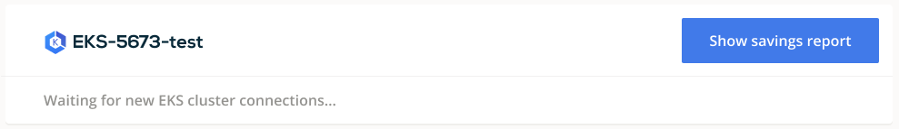

AWS EKS¶
Connect cluster¶
To connect your cluster, log into the CAST AI console and navigate to the Connect cluster window, EKS tab. Copy the provided script and run it in your terminal or cloud shell. Make sure that kubectl is installed and can access your cluster.

The script will create the following Kubernetes objects related to the castai-agent agent:
- namespace and deployment
- serviceaccount and secret
- clusterrole and clusterrolebinding
- role and rolebinding
- resourcequota
- configmap
After installation, your cluster name will appear below connection instructions as well as in the Cluster list. From there, you can open the cluster details and explore a detailed savings estimate based on your cluster configuration.

The agent will run in a read-only mode, providing savings suggestions without applying any modifications.
Credential onboarding¶
To unlock all the benefits and enable automated cost optimization, CAST AI needs to have access to your cluster. The following section describes the steps required to onboard the EKS cluster on the CAST AI console. To make it less troublesome, we created a script that automates most of the steps.
Prerequisites:
-
AWS CLI- A command line tool for working with AWS services using commands in your command-line shell. For more information, see Installing AWS CLI. -
jq– a lightweight command line JSON processor. For more information about the tool click here. -
IAM permissions – The IAM security principal that you're using must have permissions to work with AWS EKS, AWS IAM, and related resources. Additionally, you should have access to the EKS cluster that you wish to onboard on the CAST AI console.
Example of least priveleged policy for administrator account (permissions needed to run onboarding script, used once per cluster during onboarding)
{
"Action": [
"iam:CreateRole",
"iam:CreatePolicy",
"iam:GetPolicy",
"iam:ListPolicyVersions",
"iam:PutRolePolicy",
"iam:AttachRolePolicy",
"iam:CreateInstanceProfile",
"iam:GetInstanceProfile",
"iam:AddRoleToInstanceProfile",
"iam:UpdateAssumeRolePolicy"
]
}
- The CAST AI agent has to be running on the cluster.
Onboarding steps:
To onboard your cluster, go to the Available Savings report and click on the Start saving or Enable CAST AI button.
The following pop-up window contains the instructions for providing CAST AI with AWS access. By default, the script will create a AccessKeyId and SecretAccessKey.

If Use cross-role IAM checkbox is selected, the script will create a role in your AWS account, with a trust policy to a CAST AI AWS user, allowing access through the STS AssumeRole API.

That’s it! Your cluster is onboarded. Now you can enable CAST AI Autoscaler to keep your cluster configuration optimal.
Actions performed by the onboarding script¶
The script will perform the following actions:
-
Create
cast-eks-*cluster-name*IAM user (if cross-account Role IAM is selected, an IAM role is created instead), with the required permissions to manage the cluster:AmazonEC2ReadOnlyAccessIAMReadOnlyAccess- Manage instances in specified cluster restricted to cluster VPC
- Manage autoscaling groups in the specified cluster
- Manage EKS Node Groups in the specified cluster
-
Create
CastEKSPolicypolicy used to manage EKS cluster. The policy contains the following permissions:- Create & delete instance profiles
- Create & manage roles
- Create & manage EC2 security groups, key pairs, and tags
- Run EC2 instances
-
Create following roles:
cast-*cluster-name*-eks-#######to manage EKS nodes with following AWS managed permission policies applied :- AmazonEKSWorkerNodePolicy
- AmazonEC2ContainterRegistryReadOnly
- AmazonEKS_CNI_Policy
-
Modify
aws-authConfigMap to map newly created IAM user to the cluster (skipped in case of cross-role IAM) - If a cross-account role IAM was not selected, AWS
AccessKeyIdandSecretAccessKeyare created and printed, which then can be added to the CAST AI console and assigned to the corresponding EKS cluster. TheAccessKeyIdandSecretAccessKeyare used to by CAST to make programmatic calls to AWS and are stored in CAST AI's secret store that runs on Google's Secret manager solution. - With cross-account role IAM selected, a Role ARN is printed and sent to CAST AI console, which is then used by CAST AI to assume the role when making AWS programmatic calls.
All the Write permissions are scoped to a single EKS cluster - it won't have access to resources of any other clusters in the AWS account.
Manual credential onboarding¶
To complete the steps mentioned above manually (without our script), be aware that when you create an Amazon EKS cluster, the IAM entity user or role (such as a federated user that creates the cluster) is automatically granted a system:masters permissions in the cluster's RBAC configuration in the control plane. To grant additional AWS users or roles the ability to interact with your cluster, you need to edit the aws-auth ConfigMap within Kubernetes. For more information, see Managing users or IAM roles for your cluster.
Usage of AWS services¶
CAST AI relies on the agent runs inside customer's cluster. The following services are consumed during the operation:
- A portion of EC2 node resources from the customer's cluster. The CAST AI agent uses Cluster proportional vertical autoscaler to consume a minimum required resources depending on the size of the cluster
- Low amount of network traffic to communicate with CAST AI SaaS
- EC2 instances, their storage, and intra-cluster network traffic to manage Kubernetes cluster and perform autoscaling
- IAM resources as detailed in the onboarding section